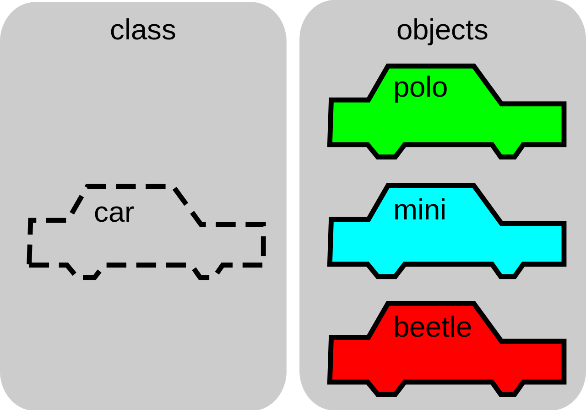

分享人：沈沪生
目录
1.背景介绍
2.知识剖析
3.常见问题
4.解决方案
5.编码实战
6.扩展思考
7.参考文献
8.更多讨论
面向对象编程(Object-oriented Programming,缩写：OOP)是软件工程中一种具有对象概念的编程范式(Programming Paradigm)，同时也是一种程序开发的抽象方针，与之对应的编程范式还有：函数式编程(Functional Programming)、过程式编程(Procedural Programming)、响应式编程(Reactive Programming)等。
在面向对象编程世界里，一切皆为对象，对象是程序的基本单元，对象把程序与数据封装起来提供对外访问的能力，提高软件的重用性，灵活性和扩展性。例如，Java中的java.lang.Object对象，可以表示Java中的一切对象(注意区分8种基本数据类型)。 在面向对象编程中，通常把对象的数据(字段)称为属性，把对象的行为称为方法。
面向对象编程是用抽象方式创建基于现实世界模型的一种编程模式。它使用先前建立的范例，包括模块化，多态和封装几种技术。今天，许多流行的编程语言（如Java，JavaScript，C＃，C+ +，Python，PHP，Ruby和Objective-C）都支持面向对象编程（OOP）。
相对于「一个程序只是一些函数的集合，或简单的计算机指令列表。」的传统软件设计观念而言，面向对象编程可以看作是使用一系列对象相互协作的软件设计。 在 OOP 中，每个对象能够接收消息，处理数据和发送消息给其他对象。每个对象都可以被看作是一个拥有清晰角色或责任的独立小机器。
专业术语
Namespace 命名空间:允许开发人员在一个独特，应用相关的名字的名称下捆绑所有功能的容器。 Class 类:定义对象的特征。它是对象的属性和方法的模板定义。 Object 对象:类的一个实例。 Property 属性: 对象的特征，比如颜色。 Method 方法:对象的能力，比如行走。 Constructor 构造函数:对象初始化的瞬间，被调用的方法。通常它的名字与包含它的类一致。 Inheritance 继承:一个类可以继承另一个类的特征。 Encapsulation 封装:一种把数据和相关的方法绑定在一起使用的方法。 Abstraction 抽象:结合复杂的继承，方法，属性的对象能够模拟现实的模型。 Polymorphism 多态:多意为「许多」，态意为「形态」。不同类可以定义相同的方法或属性。
对象与类
在面向对象编程中，最常见的表现就是基于类(Class)来表现的，每一个对象实例都有具体的类，即对象的类型。使用类的面向对象编程也称为基于类的编程(Class-based programming)，如常见的Java，C++；而与之类似的有基于原型的编程(Prototype-based programming)，如JavaScript。

JavaScript面向对象编程
基于原型的编程不是面向对象编程中体现的风格，且行为重用（在基于类的语言中也称为继承）是通过装饰它作为原型的现有对象的过程实现的。这种模式也被称为弱类化，原型化，或基于实例的编程。
命名空间
命名空间是一个容器，它允许开发人员在一个独特的，特定于应用程序的名称下捆绑所有的功能。 在JavaScript中，命名空间只是另一个包含方法，属性，对象的对象。
创造的JavaScript命名空间背后的想法很简单：一个全局对象被创建，所有的变量，方法和功能成为该对象的属性。使用命名空间也最大程度地减少应用程序的名称冲突的可能性。
var MYAPP = MYAPP || {};//全局命名空间
MYAPP.event = {};//子命名空间
// 给普通方法和属性创建一个叫做MYAPP.commonMethod的容器
MYAPP.commonMethod = {
regExForName: "", // 定义名字的正则验证
regExForPhone: "", // 定义电话的正则验证
validateName: function(name){
// 对名字name做些操作，你可以通过使用“this.regExForname”
// 访问regExForName变量
},
validatePhoneNo: function(phoneNo){
// 对电话号码做操作
}
}
// 对象和方法一起申明
MYAPP.event = {
addListener: function(el, type, fn) {
// 代码
},
removeListener: function(el, type, fn) {
// 代码
},
getEvent: function(e) {
// 代码
}
// 还可以添加其他的属性和方法
}
//使用addListener方法的写法:
MYAPP.event.addListener("yourel", "type", callback);
标准内置对象
JavaScript有包括在其核心的几个对象，例如，Math，Object，Array和String对象。下面的例子演示了如何使用Math对象的random()方法来获得一个随机数。
console.log(Math.random());
自定义对象
类
JavaScript是一种基于原型的语言，它没类的声明语句，比如C+ +或Java中用的。这有时会对习惯使用有类申明语句语言的程序员产生困扰。相反，JavaScript可用方法作类。定义一个类跟定义一个函数一样简单。在下面的例子中，我们定义了一个新类Person。
function Person() { }
// 或
var Person = function(){ }
对象（类的实例）
我们使用 new obj 创建对象 obj 的新实例, 将结果（obj 类型）赋值给一个变量方便稍后调用。 在下面的示例中，我们定义了一个名为Person的类，然后我们创建了两个Person的实例(person1 and person2).
function Person() { }
var person1 = new Person();
var person2 = new Person();
构造器
在实例化时构造器被调用 (也就是对象实例被创建时)。构造器是对象中的一个方法。 在JavaScript中函数就可以作为构造器使用，因此不需要特别地定义一个构造器方法，每个声明的函数都可以在实例化后被调用执行。 构造器常用于给对象的属性赋值或者为调用函数做准备。 在本文的后面描述了类中方法既可以在定义时添加，也可以在使用前添加。
function Person() {
alert('Person instantiated');
}
var person1 = new Person();
var person2 = new Person();
属性 (对象属性)
属性就是 类中包含的变量;每一个对象实例有若干个属性. 为了正确的继承，属性应该被定义在类的原型属性 (函数)中。 可以使用 关键字 this调用类中的属性, this是对当前对象的引用。 从外部存取(读/写)其属性的语法是: InstanceName.Property; 这与C++，Java或者许多其他语言中的语法是一样的 (在类中语法 this.Property 常用于set和get属性值)
function Person(firstName) {
this.firstName = firstName;
alert('Person instantiated');
}
var person1 = new Person('Alice');
var person2 = new Person('Bob');
// Show the firstName properties of the objects
alert('person1 is ' + person1.firstName); // alerts "person1 is Alice"
alert('person2 is ' + person2.firstName); // alerts "person2 is Bob"
方法（对象属性）
方法与属性很相似， 不同的是：一个是函数，另一个可以被定义为函数。 调用方法很像存取一个属性, 不同的是add () 在方法名后面很可能带着参数. 为定义一个方法, 需要将一个函数赋值给类的 prototype 属性; 这个赋值给函数的名称就是用来给对象在外部调用它使用的。
function Person(firstName) {
this.firstName = firstName;
}
Person.prototype.sayHello = function() {
alert("Hello, I'm " + this.firstName);
};
var person1 = new Person("Alice");
var person2 = new Person("Bob");
// call the Person sayHello method.
person1.sayHello(); // alerts "Hello, I'm Alice"
person2.sayHello(); // alerts "Hello, I'm Bob"
function Person(firstName) {
this.firstName = firstName;
}
Person.prototype.sayHello = function() {
alert("Hello, I'm " + this.firstName);
};
var person1 = new Person("Alice");
var person2 = new Person("Bob");
var helloFunction = person1.sayHello;
person1.sayHello(); // alerts "Hello, I'm Alice"
person2.sayHello(); // alerts "Hello, I'm Bob"
helloFunction(); // alerts "Hello, I'm undefined" (or fails
// with a TypeError in strict mode)
console.log(helloFunction === person1.sayHello); // logs true
console.log(helloFunction === Person.prototype.sayHello); // logs true
helloFunction.call(person1); // logs "Hello, I'm Alice"
继承
创建一个或多个类的专门版本类方式称为继承（Javascript只支持单继承）。 创建的专门版本的类通常叫做子类，另外的类通常叫做父类。 在Javascript中，继承通过赋予子类一个父类的实例并专门化子类来实现。在现代浏览器中你可以使用 Object.create 实现继承.
// 定义Person构造器
function Person(firstName) {
this.firstName = firstName;
}
// 在Person.prototype中加入方法
Person.prototype.walk = function(){
alert("I am walking!");
};
Person.prototype.sayHello = function(){
alert("Hello, I'm " + this.firstName);
};
// 定义Student构造器
function Student(firstName, subject) {
// 调用父类构造器, 确保(使用Function#call)"this" 在调用过程中设置正确
Person.call(this, firstName);
// 初始化Student类特有属性
this.subject = subject;
};
// 建立一个由Person.prototype继承而来的Student.prototype对象.
// 注意: 常见的错误是使用 "new Person()"来建立Student.prototype.
// 这样做的错误之处有很多, 最重要的一点是我们在实例化时
// 不能赋予Person类任何的FirstName参数
// 调用Person的正确位置如下，我们从Student中来调用它
Student.prototype = Object.create(Person.prototype); // See note below
// 设置"constructor" 属性指向Student
Student.prototype.constructor = Student;
// 更换"sayHello" 方法
Student.prototype.sayHello = function(){
console.log("Hello, I'm " + this.firstName + ". I'm studying " + this.subject + ".");
};
// 加入"sayGoodBye" 方法
Student.prototype.sayGoodBye = function(){
console.log("Goodbye!");
};
// 测试实例:
var student1 = new Student("Janet", "Applied Physics");
student1.sayHello(); // "Hello, I'm Janet. I'm studying Applied Physics."
student1.walk(); // "I am walking!"
student1.sayGoodBye(); // "Goodbye!"
// Check that instanceof works correctly
console.log(student1 instanceof Person); // true
console.log(student1 instanceof Student); // true
封装
在上一个例子中，Student类虽然不需要知道Person类的walk()方法是如何实现的，但是仍然可以使用这个方法；Student类不需要明确地定义这个方法，除非我们想改变它。 这就叫做封装，对于所有继承自父类的方法，只需要在子类中定义那些你想改变的即可。
抽象
抽象是允许模拟工作问题中通用部分的一种机制。这可以通过继承（具体化）或组合来实现。 JavaScript通过继承实现具体化，通过让类的实例是其他对象的属性值来实现组合。
var foo = function(){};
console.log( 'foo is a Function: ' + (foo instanceof Function) ); // logs "foo is a Function: true"
console.log( 'foo.prototype is an Object: ' + (foo.prototype instanceof Object) ); // logs "foo.prototype is an Object: true"
多态
就像所有定义在原型属性内部的方法和属性一样，不同的类可以定义具有相同名称的方法;方法是作用于所在的类中。并且这仅在两个类不是父子关系时成立（继承链中，一个类不是继承自其他类）。
function createObject(proto) {
function ctor() { }
ctor.prototype = proto;
return new ctor();
}
// Usage:
Student.prototype = createObject(Person.prototype);
如何封装一个函数
//工厂方式
function createPerson(name,age){
var obj=new Object;
obj.name=name;
obj.age=age;
obj.say=function(){
console.log('我叫'+obj.name);
}
return obj;
}
var p1=createPerson('Jackson',30);
var p2=createPerson('Jack',18);
p1.say();
p2.say();
随着计算机科学的发展，面向对象也一直在扩展，其实面向对象只是一种编程范例，或者是一种编程思路，只是编码解决问题的一种通用思路，不同语言对于面向对象的支持与实现其实也是大同小异，了解面向对象的思想更为重要。无需纠结概念上的却别，例如，Golang认为组合优于继承，但是从大体来看其实组合和继承最终的结果都是为了复用。
那么，既然面向对象如此灵活易用，那么我们还需要其他的编程范式吗？ 其实不然，使用面向对象解决问题的时候需要明确抽象的层次，也就是说不同的问题其对应的抽象层次是不同的，比如，起床这件事情：
面向对象
class People {
public void getUp(){
}
}
People.getUp();//起床
面向过程
//起床开始
openEye;//睁眼，开始到结束
dressed;//穿衣服，开始到结束
getOutOfBed;//下床，开始到结束
//起床结束
这样看来，从起床这件事情来看，面向对象更加简洁明了，但是面向过程在这过程中就没用了么，其实不是，例如，People.getUp方式可以这么实现：
class People {
public void getUp(){
Eye.open();//睁眼
Body.dressed();//穿衣服
Body.getOutOfBed();//下床
}
}
那么，从起床这个问题来看，起床的内部实现其实还是面向过程式的，即使用的还是面向对象编程去实现，所以，我个人觉得面向对象是相对的，需要站在解决问题的角度来看待面向对象的抽象层次，与之对于的过程式编程是在不同的层次解决不同的问题，其他编程范式也一样，它们之间可以并存，这并不矛盾。
https://www.jianshu.com/p/3a81c69134c2
https://developer.mozilla.org
wiki面向对象